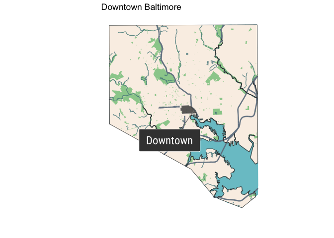
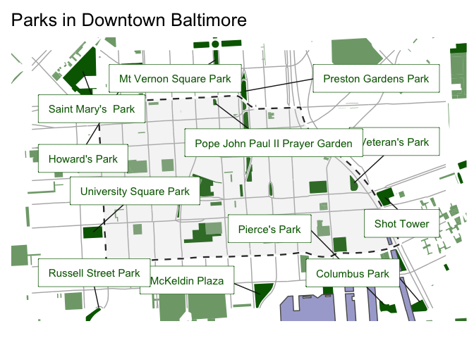
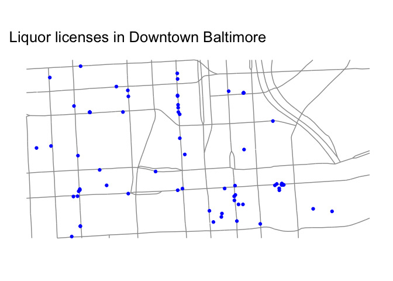

The goal of the mapbaltimore package is to provide an easy way to create maps of Baltimore neighborhoods using open data on demographics, transportation, housing, and public safety.
You can install this development version from GitHub with:
# install.packages("devtools")
remotes::install_github("elipousson/mapbaltimore")The mapbaltimore package includes utility functions to a neighborhood or other area type and mapping functions to create common planning maps such as this context map for downtown Baltimore.
## Linking to GEOS 3.8.1, GDAL 3.1.4, PROJ 6.3.1
library(mapbaltimore)
downtown <- get_area(type = "neighborhood",
area_name = "Downtown")
map_area_in_city(area = downtown) +
ggplot2::labs(title = "Downtown Baltimore")
Or this map of parks in and around downtown Baltimore.
map_area_parks(area = downtown) +
ggplot2::labs(title = "Parks in Downtown Baltimore")
Or this map highlighting different neighborhoods around downtown Baltimore.
around_downtown <- get_nearby_areas(area = downtown,
type = "neighborhood")
map_area_highlighted(area = around_downtown) +
ggplot2::labs(title = "Neighborhoods around Downtown Baltimore")
The package includes several functions for accessing data on Open Baltimore. However, as of December 31, 2020, Baltimore City has shut down the Socrata-based Open Baltimore data portal and replaced it with a ArcGIS data catalog. Consequently, these functions are not currently working.